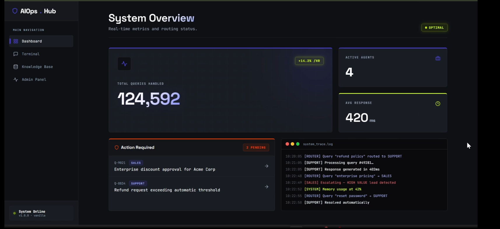
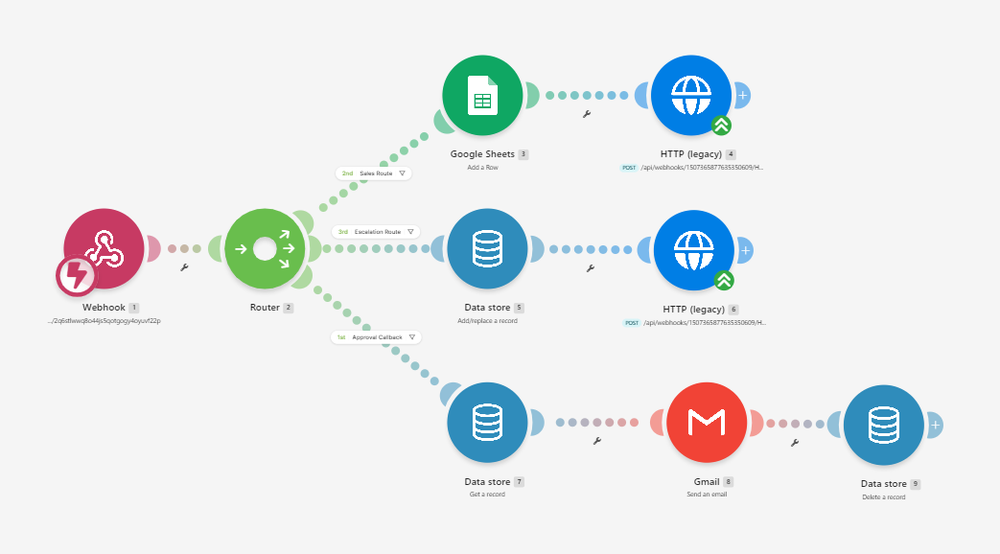

SYSTEM 03 — INTELLIGENT OPERATIONS
AI Operations
Hub.
A multi-agent workflow system that routes business requests to specialized agents, grounds support answers in company documents, qualifies sales leads, and escalates sensitive cases for human review.

See the system
in motion.
The end-to-end demo brings the interface, workflow, and specialized agent paths together.
Videos start muted when they enter the viewing area and pause when scrolled out of view. Use the player controls to enable sound.
One interface.
Specialized workflows.
The hub brings support, sales, and escalation paths into one workflow. Each route is designed around a different business task, with document retrieval where knowledge is needed and human review where automation should stop.
From request
to action.
Make.com connects incoming events to downstream actions and integrations. The workflow below shows the routing branches used in the demo.

Answers grounded
in your documents.
The support path uses retrieval-augmented generation to find relevant context in an uploaded knowledge base and use it to answer questions. When the source document doesn't contain the answer, the system can avoid inventing policy details.
Turn inquiries
into qualified leads.
The sales path extracts the prospect's company size, support volume, need, budget, and timeline, then produces a concise qualification summary and triggers a downstream notification workflow.
Know when to
escalate.
When a case is sensitive, unresolved, or emotionally charged, the escalation path can prepare a summary and draft response for human review rather than treating it like a routine support request.
Automate the routine.
Escalate the important.
Explore the implementation and source code on GitHub.